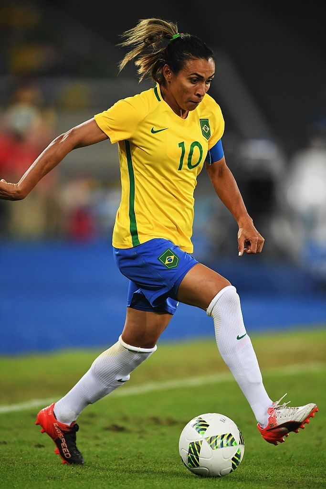
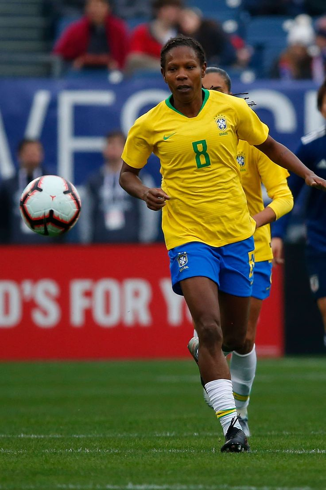
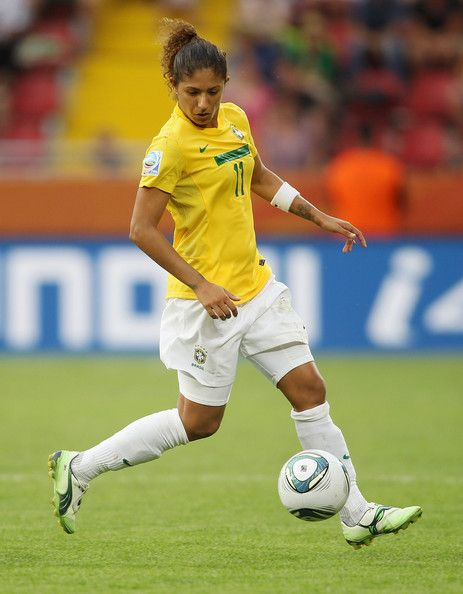
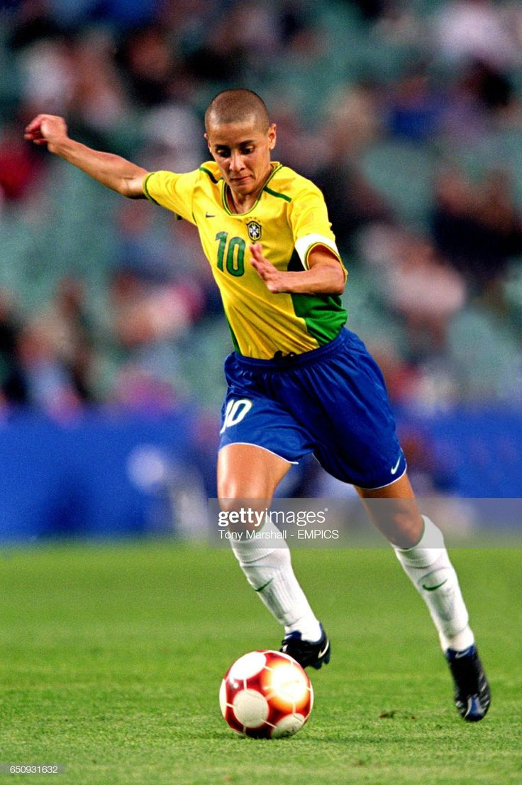

Jogo de Mulheres, Força de Campeã.
O futebol feminino é crucial para a igualdade de gênero, quebrando barreiras socioculturais e promovendo o empoderamento feminino. Ele oferece representatividade, saúde física/mental, ensina valores como trabalho em equipe e resiliência, além de impulsionar a economia e desafiar estereótipos de gênero.

É frequentemente considerada a melhor jogadora de futebol feminino de todos os tempos. Com uma trajetória repleta de conquistas, se tornou uma lenda viva do esporte, acumulando seis prêmios de Melhor Jogadora do Mundo pela FIFA, um feito inigualável. Ela é a artilheira histórica da Copa do Mundo Feminina e das Olimpíadas, estabelecendo recordes que solidificaram seu status como uma das maiores atletas da história do futebol.

É outra lenda viva do futebol. Nascida em Salvador, Bahia, começou a jogar futebol ainda criança, e sua paixão pelo esporte rapidamente se traduziu em uma carreira extraordinária. Participou de sete Copas do Mundo e sete Jogos Olímpicos, estabelecendo um recorde absoluto no futebol, tanto masculino quanto feminino. Essa impressionante longevidade em alto nível é um testemunho de sua dedicação, talento e resiliência.

É amplamente reconhecida como uma das maiores artilheiras do futebol feminino brasileiro. Nascida em São Paulo, rapidamente ascendeu ao cenário nacional e internacional devido ao seu talento excepcional. Ao longo de sua carreira, brilhou em diversas edições dos Jogos Olímpicos e Copas do Mundo, destacando-se por sua habilidade incomparável de finalização e sua presença imponente na área. Ela é conhecida por sua capacidade de marcar gols em momentos decisivos.

Fez parte da primeira equipe convocada pela CBF em 1988 para o primeiro Mundial feminino experimental da FIFA, foi artilheira da Copa do Mundo de 1999, bicampeã sul-americana em 1995 e 1998 e é a única brasileira a integrar o FIFA Legends, honraria destinada aos principais nomes do futebol mundial. Conhecida por sua precisão nos chutes e por ser uma excelente cobradora de faltas com precisão milimétrica fez dela uma ameaça constante para as adversárias.